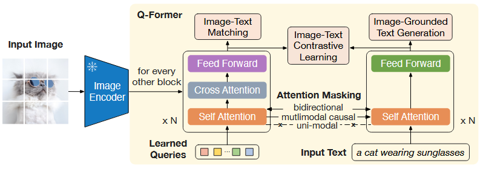
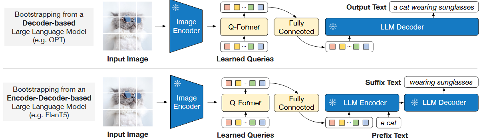

论文笔记 - BLIP-2: Bootstrapping Language-Image Pre-training with Frozen Image Encoders and Large Language Models
1. Information
Title: BLIP-2: Bootstrapping Language-Image
Pre-training with Frozen Image Encoders and Large Language Models
Link: BLIP-2
Paper
Source: International Joint Conference on Artificial
Intelligence (IJCAI)
Date: 2023
2. Summary
BLIP-2 提出了一种新的视觉-语言预训练 (Vision-Language Pre-training, VLP) 方法，通过冻结的图像编码器和大规模语言模型 (LLM) 进行高效的跨模态学习。核心创新点包括：
- Querying Transformer (Q-Former): 设计了一种轻量级的查询 Transformer，作为图像编码器与 LLM 之间的信息桥梁。
- 两阶段训练策略:
- 第一阶段：从冻结的图像编码器学习视觉-语言表示。
- 第二阶段：从冻结的 LLM 学习视觉到语言的生成能力。
- 高效计算: 相比 Flamingo80B，BLIP-2 仅使用 54 倍更少的可训练参数，在零样本 VQA 任务上仍然能取得 8.7% 的性能提升。
- Emerging Capabilities: BLIP-2 具备零样本图像到文本生成的能力，能响应自然语言指令，如视觉知识推理、视觉对话等。
3. Background
传统的 VLP 方法依赖于端到端训练大规模模型，这导致计算成本高昂，并且难以充分利用现有的单模态预训练模型（如 CLIP 和 GPT）。BLIP-2 的核心目标是通过冻结这些预训练模型，降低训练成本，同时提高性能。
主要挑战：
- 模态对齐问题: 由于 LLM 在预训练时未见过图像，冻结 LLM 使得视觉-语言对齐变得困难。
- 计算开销: 现有方法（如 Flamingo）需要在大规模数据集上进行计算密集的端到端训练。
4. Research Objective
BLIP-2 旨在通过冻结的图像编码器和 LLM，引导轻量级 Q-Former 学习模态对齐，实现高效的 VLP 训练。其具体目标包括：
- 提高视觉-语言对齐能力: 通过 Q-Former 从冻结的图像编码器提取信息，并桥接到 LLM。
- 提升计算效率: 通过模块化方法减少可训练参数，同时保持高性能。
- 提升零样本能力: 使模型在没有额外微调的情况下，执行图像描述、VQA 和视觉对话任务。
5. Method
BLIP-2 采用了一种新的两阶段预训练框架，并引入了 Q-Former 作为视觉-语言桥梁。
5.1 Q-Former 结构

Q-Former 是一个轻量级 Transformer，由两个子模块组成：
- 图像 Transformer: 通过自注意力和交叉注意力层，从冻结的图像编码器中提取视觉特征。
- 文本 Transformer: 既可以作为编码器，也可以作为解码器，用于连接 LLM。
查询向量 (Query Embeddings) 模型使用 \(N\) 个可学习查询向量 (Queries)，它们：
- 通过自注意力机制交互。
- 通过交叉注意力机制与冻结的图像特征交互。
- 最终生成固定大小的视觉表示，用于 LLM 输入。
公式表示：
图像编码器输出 \(X = \text{FrozenImageEncoder}(I)\)
查询向量 \(Q = [q_1, q_2, ..., q_N]\)
经过 Transformer 层： \[ Z=\mathrm{Q}\operatorname{Former}(Q, X) \] 其中 \(Z\) 是输出的查询表示，用于下游任务。
BLIP-2 通过冻结的图像编码器学习视觉-语言对齐，使用三种损失：
- 图像-文本对比学习（Image-Text Contrastive Learning, ITC）：通过最大化图像和文本表示之间的互信息，学习对齐图像和文本表示。具体来说，通过对比正样本对的图像-文本相似度与负样本对的相似度来实现。
- 图像引导的文本生成（Image-grounded Text Generation, ITG）：训练Q-Former根据输入图像生成文本。由于 Q-Former 的架构不允许图像编码器直接与文本标记交互，因此需要通过查询向量提取信息，并通过自注意力层传递给文本标记。
- 图像-文本匹配（Image-Text Matching, ITM）：这是一个二分类任务，模型需要预测图像-文本对是否匹配。通过双向自注意力掩码，查询向量和文本可以相互交互，从而捕获多模态信息。
5.2 视觉到语言生成学习
在这一阶段，Q-Former 连接到一个冻结的 LLM，学习视觉信息到文本的映射。

目标：
- 通过前馈层将 Q-Former 输出映射到 LLM 的嵌入空间：
\[ Z^{\prime}=W Z+b \]
- 将其作为软视觉提示附加到输入文本嵌入中。这一阶段的目标是训练 Q-Former 生成 LLM 能够理解的视觉表示，从而减少 LLM 在学习视觉-语言对齐时的负担。
6. Evaluation
BLIP-2 在多个任务上进行了评估：
- 零样本 VQA: 在 VQAv2 数据集上，优于 Flamingo80B 8.7%。
- 图像字幕生成: 在 NoCaps 和 COCO 上，CIDEr 分数超过 121。
- 图像-文本检索: Flickr30K 数据集上，R@1 达到 97.6%。
7. Conclusion
- BLIP-2 通过冻结预训练的图像编码器和 LLM，利用轻量级的 Q-Former 桥接视觉和语言模态之间的差距，提出了一种高效且通用的视觉-语言预训练方法。该方法在多种视觉-语言任务上达到了最先进的性能，同时显著减少了可训练参数。此外，BLIP-2 还展示了零样本图像到文本生成的能力，能够遵循自然语言指令。这一研究为构建多模态对话 AI 代理迈出了重要一步。